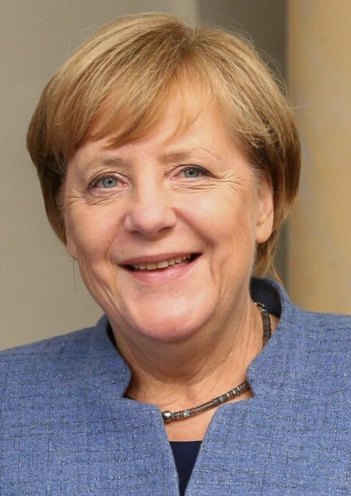

Angela Dorothea Merkel (/ˈmɜːrkəl, ˈmɛərkəl/, German: [aŋˈɡeːla ˈmɛɐ̯kl̩];[a] née Kasner; born 17 July 1954) is a German politician serving as Chancellor of Germany since 2005. She served as the leader of the centre-right Christian Democratic Union (CDU) from 2000 to 2018.[10] Merkel has been widely described as the de facto leader of the European Union,[11] the most powerful woman in the world,[12] and, following the election of Donald Trump as US President, by many commentators as the new leader of the Free World.[13][14][15][16][17] Merkel was born in Hamburg in then-West Germany and moved to East Germany as an infant when her father, a Lutheran clergyman, received a pastorate in Perleberg. She obtained a doctorate in quantum chemistry in 1986 and worked as a research scientist until 1989. Merkel entered politics in the wake of the Revolutions of 1989, and briefly served as a deputy spokesperson for the first democratically elected East German Government headed by Lothar de Maizière in 1990. Following German reunification in 1990, Merkel was elected to the Bundestag for the state of Mecklenburg-Vorpommern, and has been reelected ever since. As the protégée of Chancellor Helmut Kohl, Merkel was appointed as the Federal Minister for Women and Youth in Kohl's government in 1991, and became the Federal Minister for the Environment, Nature Conservation and Nuclear Safety in 1994. After her party lost the federal election in 1998, Merkel was elected Secretary-General of the CDU before becoming the party's first female leader two years later in the aftermath of a donations scandal that toppled Wolfgang Schäuble. Following the 2005 federal election, Merkel was appointed Germany's first female chancellor at the head of a grand coalition consisting of the CDU, its Bavarian sister party the Christian Social Union (CSU), and the Social Democratic Party of Germany (SPD). In the 2009 federal election the CDU obtained the largest share of the vote, and Merkel was able to form a coalition government with the Free Democratic Party (FDP).[18] At the 2013 federal election, Merkel's CDU won a landslide victory with 41.5% of the vote and formed a second grand coalition with the SPD, after the FDP lost all of its representation in the Bundestag.[19] After the 2017 federal election the CDU was again the largest party, and she was reelected to her fourth term on 14 March 2018.[20]
